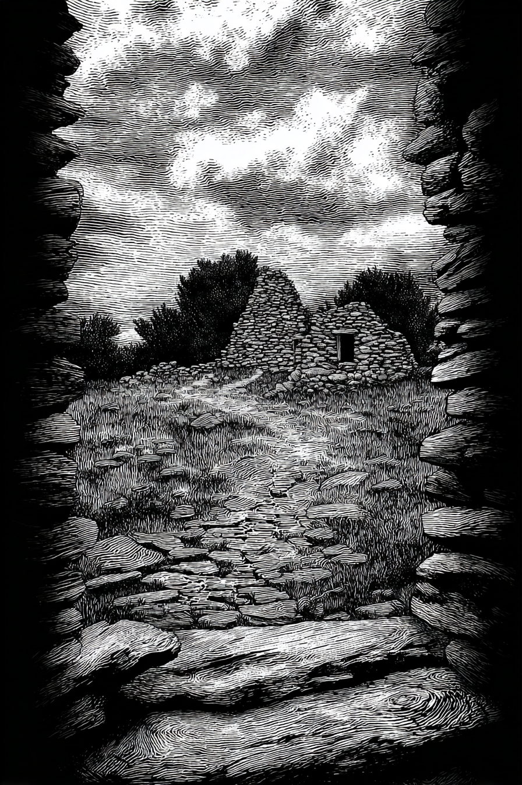

[27]
The first stone cabin has an empty, dark doorway. The interior is musty and filled with shadows. Old furniture lies covered in a thick layer of dust. There is nothing of obvious value, but it would provide shelter from the wind.
Leave and explore the second cabin.
(
go to page 28
)
Leave the ruins and continue on.
(
go to page 29
)
Return to the central ruins area.
(
go to page 25
)